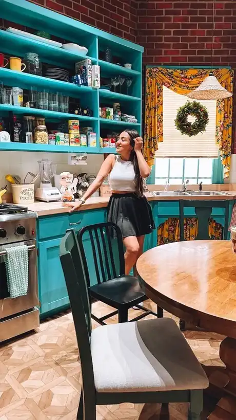
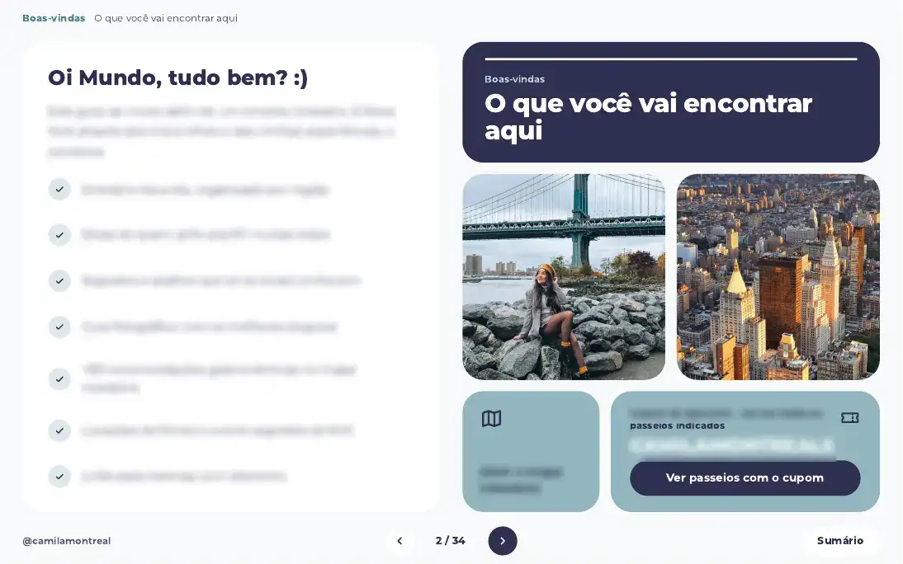

{{fd|Versão desktop}}
{{fdt|Para planejar com calma, no computador.}}
{{k-next|Próxima estação}}{{k-st0|Início da linha}}
{{k-want|Eu quero}}{{lede|roteiro completo, adaptado para quantos dias você tiver.}}
{{what1|O meu guia pessoal de Nova York: um roteiro completo que se adapta à sua viagem, sem meses de pesquisa.}}
{{what2|Tudo que eu faria e recomendaria a uma amiga: bairros, horários, segredos, onde comer e links com desconto. No computador para planejar, no celular durante a viagem.}}
{{tl|Dentro do guia}}
{{tm0|Tem um segredo escondido numa das estações mais famosas da cidade.}}
{{dlead|Não importa quantos dias você tem: o guia é organizado por região, então sempre tem o que fazer. Escolha uma e espie.}}
{{hoods|Bairros e regiões que o guia cobre:}}

{{ptipk|No guia: as melhores paradas, spots para foto, horários e links com desconto.}}
{{glead|Um gostinho do que vem no arquivo. Toque para folhear.}}

{{vhint|O resto está no guia}}{{flead|Você recebe os dois arquivos, com o mesmo conteúdo.}}
{{fdt|Para planejar com calma, no computador.}}
{{fmt|Para consultar durante a viagem, com uma mão só.}}
{{fot|Baixe o PDF e use sem internet.}}
{{ilead|Toque em um prédio para ver o que vem no guia.}}
{{band2|Sempre que eu conhecer um lugar novo, você vai saber.}}
{{vlead|Os lugares que eu mostro no guia, do jeito que eu vivi cada um.}}

{{a1|O bilhete errado custa caro.}}
{{a2|Nem todo passeio precisa ser caro.}}
{{a3|Dá para pagar menos.}}
{{a4|Onde vale e onde não vale.}}
{{a5|Qual vale mais a pena.}}
{{a6|Achar banheiro é difícil.}}
{{rlead|Sem plano, você pega fila e perde horas. Com o guia, cada parada tem o melhor horário. Arraste a hora e veja a diferença no vagão.}}
{{rnote|Ilustração para brincar, não é dado real de lotação. No guia, as dicas de horário são reais, para cada parada.}}
{{pflead|Depoimentos reais de quem viajou com ele.}}
“Esse guia é simplesmente maravilhoso! Tem tanta dica boa que parece que alguém reuniu tudo de melhor da internet em um lugar só. Economizei horas de pesquisa!”
“Fui com meus dois filhos e o guia facilitou MUITO nossa viagem! Conseguimos organizar os passeios por região e aproveitar os dias sem aquela correria.”
“O que mais gostei foi a organização. As dicas são superpráticas e dá pra montar um roteiro sem ficar abrindo mil abas no celular. Vale muito a pena!”
“Nova York sempre foi meu sonho e eu queria conhecer todos aqueles lugares que aparecem nos filmes. O guia me ajudou a encontrar vários deles. Foi mágico!”
“Comprei principalmente pelas dicas de economia e não me arrependi. Descobri vários passeios gratuitos e consegui aproveitar Nova York sem gastar uma fortuna.”
“Adoro explorar cidades caminhando e amei como o guia reúne atrações próximas. Conseguimos fazer muita coisa a pé e descobrir lugares incríveis pelo caminho.”
“Além de lindo por dentro, é extremamente completo! Dá pra perceber o cuidado em cada detalhe. Tem dicas que eu nem tinha encontrado pesquisando no Google!”
“Queria viver a experiência completa de Nova York: andar de metrô, comer nos lugares típicos e conhecer os pontos famosos. O guia foi perfeito pra isso!”
“Já tinha salvo centenas de vídeos no Instagram e TikTok, mas estava tudo bagunçado. O guia trouxe a praticidade que faltava. Tudo organizado e fácil de encontrar!”
“Foi uma das melhores coisas que planejei para a viagem! Economizei tempo, descobri lugares que não estavam no meu roteiro e aproveitei muito mais cada dia.”
{{pfnote|Depoimentos enviados por clientes, publicados com autorização.}}
{{ab1|Cami tem 32 anos, já conheceu 38 países e mora no Canadá há 4 anos. Já perdeu a conta de quantas vezes foi a Nova York.}}
{{ab2|Seu amor por novas culturas e sabores faz a Cami explorar ao máximo os destinos e planejar os mínimos detalhes das viagens. É formada em Marketing, pós-graduada em Inteligência Competitiva e Inovação em Marketing, também leva grupos de viagem pelo mundo e ama compartilhar experiências!}}
{{plead|Menos tempo planejando, mais tempo em Nova York.}}
{{pk|Guia completo de Nova York}}
R$ 67,90
Comprar o guia{{gar|Se não gostar, peça o reembolso em até 7 dias.}}
{{inc|Você recebe o link por e-mail, com a versão desktop e a celular do PDF.}}
{{lg|Você está vendo o site em português: preço em reais e checkout em português. Para ver em inglês, use o botão EN lá em cima.}}
{{r1|Assim que o pagamento for confirmado, você recebe um e-mail com o link do PDF interativo, com versão para desktop e versão para celular.}}
{{r2|O conteúdo é o mesmo. A versão desktop é para planejar com calma no computador; a versão celular tem coluna única para consultar durante a viagem. Você recebe as duas.}}
{{r3|Não. O guia é organizado por região, então você monta o roteiro para quantos dias tiver. Se fica menos, escolha as regiões que combinam; se fica mais, há ideias extras como bate-voltas e passeios diferentes.}}
{{r4|Sim! O guia foi feito todo em português e tem várias dicas para quem nunca foi ao destino, inclusive dicas culturais, além de dicas para ver musicais em português. Também existe a versão em inglês.}}
{{r5|Não! Tanto o roteiro quanto o mapa podem ser acessados offline. Menos uma coisa para você se preocupar durante a viagem.}}
{{r6|É um menu organizado por região, não uma obrigação. Há paradas marcadas como opcionais e muitas são só uma passada ou uma foto. Você escolhe o ritmo.}}
{{r7|Preços e horários em Nova York mudam. O guia recebe atualizações gratuitas pelo mesmo link, e eu recomendo conferir o site oficial antes de comprar ingressos.}}
{{r8|São links de reserva de passeios, ingressos e serviços com o meu cupom. Alguns parceiros me pagam uma comissão quando você reserva pelo link, sem custo extra para você.}}
{{r9|Você pode pedir o reembolso em até 7 dias. Escreva para o contato que está no rodapé da página.}}
{{r10|Sim! Você pode conferir todos os meus roteiros no meu site: camilamontreal.com/ebooks.}}
{{zt|Você já escolheu o destino. Falta decidir como chegar lá: com 30 abas abertas ou com um guia na mão.}}
{{zb|Eu quero}}